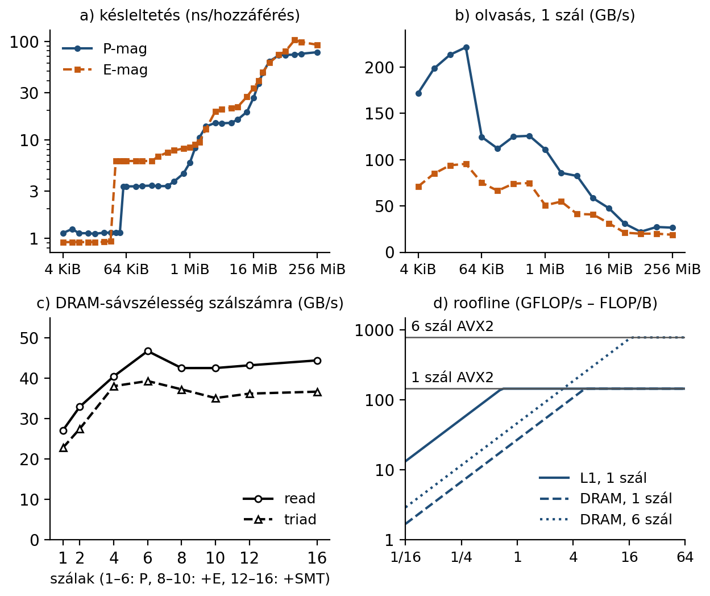
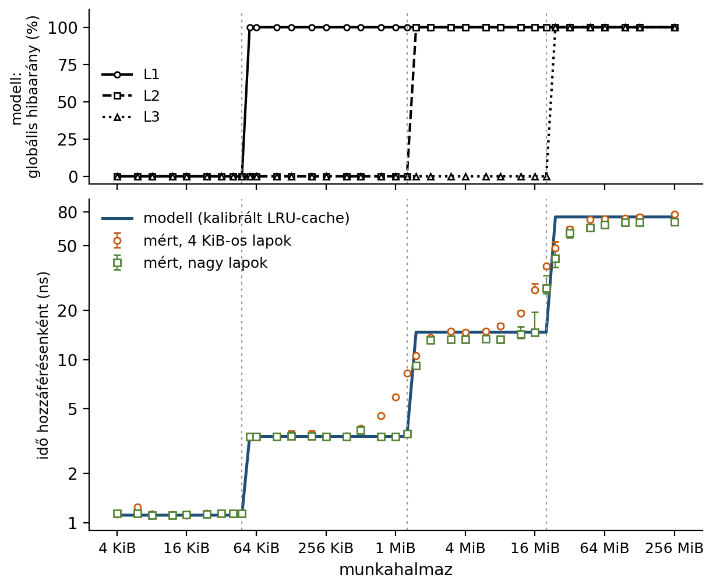

Van egy cache-szimulátorunk, amely minden hozzáférésről megmondja, talál-e vagy hibázik. Van egy sorozat mikrobenchmarkunk, amely ugyanezen a gépen méri a hozzáférési időt. Vajon a kettő ugyanazt a történetet meséli? Ha egy 1 MiB-os mutatókövetésnél a modell L2-találatot jósol 3,4 ns-mal, a mérés pedig 5,9 ns-ot mutat, akkor vagy a modell, vagy a mérés, vagy mindkettő hiányos. A két záróprojekt éppen ezt a szembesítést szervezi meg: egy többszintű cache-szimulátort (2. projekt) és egy gépjellemző mikrobenchmark-sorozatot (3. projekt), a végén jegyzőkönyvvel, amely az eltéréseket is megmagyarázza.
A gépjellemzés négy kérdésre válaszol, és mindegyikhez egy ábrarész tartozik: mennyi ideig tart egy hozzáférés a hierarchia egyes szintjeiről (a), mennyi adat hozható egy szálon másodpercenként (b), hogyan skálázódik ez a szálakkal (c), és mi a számítás és a memória közös tetője (d).

A második ábra a két projekt találkozása: fent a szimulátor hibaarányai, lent a modell késleltetése és a mérés ugyanazokra a munkahalmazokra.

Figyeld meg, hogy a platókon a modell és a mérés fedi egymást, az átmeneteknél viszont nem – a következtetések nagy része ezekből az eltérésekből jön.
| Elem | Követelmény |
|---|---|
| szintek | tetszőleges számú (L1, L2, LLC), méret, sorméret, utak, találati idő, memóriaidő |
| befoglalás | nem befoglaló, befoglaló, kizáró |
| csere | LRU, PLRU, FIFO, véletlen, SRRIP; egyszintű esetben OPT referenciaként |
| írás | write-back vagy write-through, allokálással vagy anélkül |
| előbetöltés | következő soros és lépésköz-alapú, késleltetéssel; lefedettség, pontosság |
| statisztika | találat, hiba, kiszorítás, visszaírás, forgalom bájtban; hibaarány, AMAT, MPKI |
| opcionális | koherencia: a magok írásai közötti sortulajdon-váltások számlálása |
Az archkit.cache modul a Cache-szimulátor és cache-tudatos programozás és a
Nem blokkoló cache, memóriaszintű párhuzamosság és
prefetch alfejezetben épült fel (a StridePrefetcher is
onnan származik); a projektben ezt egészítjük ki gépmodellel
(archkit.projects.MachineModel) és
láncbejárás-szimulációval (chase_curve).
A statisztika értelmezéséhez két különbségre figyelj. A lokális hibaarány egy szint saját hozzáféréseire vonatkozik, a globális az összes processzorhozzáférésre (AMAT, a hibák osztályozása és a többszintű cache); a láncbejárás-ábra globális arányt mutat. A visszaírások az alsóbb szint forgalmát növelik, de a modell késleltetési összegébe nem számítanak bele – ha írásintenzív kernelt vizsgálsz, a bájtforgalmat is közöld.
A validálás elve ugyanaz, mint az első projektben: előbb kézi
referencia, aztán invariánsok (például találat + hiba = hozzáférés; egy
befoglaló hierarchiában az L1 tartalma az L2-ben is benne van), végül a
nagy futások. A szimulátort kézzel kiszámolható sorozatokkal
ellenőrizzük: egy négyutas halmazban az ABCDAEAB sorozatnál
LRU-val az E a B-t, a végén a B a
C-t szorítja ki; FIFO-val az E az
A-t. A prefetchernél egy egyszerű tömbolvasás a mérce.
import sys; sys.path.insert(0, "code")
from archkit import cache
for pol in ("lru", "fifo"):
steps = cache.run_set("ABCDAEAB", ways=4, policy=pol)
print(f"{pol:5}", " ".join("T" if s["hit"] else "H" for s in steps),
" kiszorítva:", [s["evicted"] for s in steps if s["evicted"]])
tr = cache.sum_trace(4096)
for label, pf in [("következő soros", cache.NextLinePrefetcher(trigger="tagged")),
("lépésköz, d=1", cache.StridePrefetcher(distance=1)),
("lépésköz, d=16", cache.StridePrefetcher(distance=16))]:
m = cache.prefetch_metrics(tr, pf, latency=8)
print(f"{label:16} hiba {m['base_misses']} -> {m['misses']:3} késő {m['late']:3}"
f" pontosság {m['accuracy']:.3f}")lru H H H H T H T H kiszorítva: ['B', 'C']
fifo H H H H T H H H kiszorítva: ['A', 'B', 'C']
következő soros hiba 256 -> 1 késő 0 pontosság 0.996
lépésköz, d=1 hiba 256 -> 256 késő 255 pontosság 0.996
lépésköz, d=16 hiba 256 -> 1 késő 0 pontosság 0.996(T: találat, H: hiba.) A
lépésköz-prefetcher egységnyi távolsággal pontos, mégis haszontalan,
mert minden kérése elkésik: az előbetöltés hasznát a
távolság dönti el. A pontosság tehát önmagában
félrevezető mutató; a lefedettséggel és a késő kérések számával együtt
kell közölni.
A többszintű hierarchiát egy valódi nyomon is futtassuk le. A
-es
matmul három sorrendje egy kicsi modellgépen (4 KiB L1, 4
ciklus; 32 KiB L2, 12 ciklus; memória 200 ciklus):
for label, order, block in [("ijk", "ijk", None), ("ikj", "ikj", None),
("ijk, 16-os blokk", "ijk", 16)]:
h = cache.Hierarchy([cache.Cache(size=4096, block=64, ways=4),
cache.Cache(size=32768, block=64, ways=8)],
hit_times=[4, 12], mem_time=200)
h.run(cache.matmul_trace(64, order, block))
l1, l2 = h.global_miss_rates
print(f"{label:17} AMAT {h.amat:5.2f} L1 {100 * l1:5.1f}% L2 {100 * l2:4.1f}%"
f" memóriából {h.mem_read_bytes // 1024} KiB")ijk AMAT 7.20 L1 25.5% L2 0.1% memóriából 48 KiB
ikj AMAT 4.34 L1 1.6% L2 0.1% memóriából 48 KiB
ijk, 16-os blokk AMAT 4.97 L1 6.8% L2 0.1% memóriából 48 KiBA memóriaforgalom mindhárom esetben ugyanaz (a 48 KiB-nyi mátrix egyszer jön be), a különbség az L1–L2 forgalomban van. Ha a szimulátorod ennél a sorozatnál mást ad, a hibát a nyom-összevetés módszerével keresd: az első eltérő találat/hiba megmutatja a hibás szabályt.
A koherencia legegyszerűbb mértéke a sortulajdon-váltások száma. Két mag felváltva ír a saját 8 bájtos számlálójába:
from archkit import projects
for stride in (8, 64):
writes = [(k % 2, (k % 2) * stride) for k in range(1000)]
print(f"{stride:2} bájtos távolság: {projects.false_sharing_transfers(writes)} váltás") 8 bájtos távolság: 999 váltás
64 bájtos távolság: 0 váltásA modell azt jósolja, hogy 8 bájtos távolságnál minden írás (az elsőt kivéve) sorvándorlás, 64 bájtnál egy sem; a mérés ennek idejét adja meg: két szálon műveletenként 19,4, illetve 4,0 ns (A koherencia ára: ping-pong és false sharing).
Minden jellemzőhöz egy célzott benchmark tartozik; mindegyik ugyanazt
a harnesst (bench.hpp) és CSV-formátumot használja,
ellenőrzőösszeggel.
| Benchmark | Mit jellemez | Mérési sorozat | A várt alak |
|---|---|---|---|
bench_sum |
átbocsátás a hierarchiában | ca044-lepcsok |
lépcsők, a prefetch simítja |
bench_chase |
terheletlen késleltetés, TLB, MLP | ca051-kesleltetes, ca053-tlb |
éles lépcsők véletlen láncon |
bench_stream |
fenntartható sávszélesség | ca051-stream, ca009-savszelesseg |
telítődés néhány szálnál |
bench_peak |
számítási csúcs | ca009-csucs |
magszámmal arányos |
bench_branchy |
tévesztés ára | ca033-rendezett-tomb |
rendezett gyors, véletlen lassú |
bench_counter |
koherencia ára | ca058-meres |
közös sor lassú, kitöltött gyors |
Mindegyik program egy tipikus mérési csapdát is kivéd, és ezeket a jegyzőkönyvben érdemes megnevezni:
triad értéke
alacsonyabb a tényleges memóriaforgalomnál ([S-STREAM]);do_not_optimize és az ellenőrzőösszeg megakadályozza,
hogy a fordító kihagyja a mért munkát;A teljes sorozatot a könyvtár gyökeréből futtatod:
make -C code/bench
python3 code/bench/measure.py --list
python3 code/bench/measure.py # tétlen gépenA measure.py alapesetben a figures/data/
alá ír, és felülírná a könyv adatait; a saját mérésedhez adj meg másik
célmappát az --out kapcsolóval, és onnan olvasd be a
jelentést. A CSV fejlécében lévő # kulcs: érték sorok a
jegyzőkönyv alapjai (A labor: archkit,
mikrobenchmarkok és mérési fegyelem); az ok_all: 1
nélkül a sorozat nem használható.
Definíció. A gépjellemzés olyan jegyzőkönyv, amely egy konkrét gépre, fordítóra és beállításra rögzíti a mért alapjellemzőket, a mérés módját és a modellel való összevetést.
| Rész | Tartalom |
|---|---|
| 1. környezet | processzor, magtípusok, cache-geometria, memória, OS, fordító, kapcsolók, frekvenciaszabályozó, terhelés, dátum |
| 2. alapjellemzők | késleltetés szintenként, olvasási sávszélesség 1 és szálon, számítási csúcs, tévesztés ára, false sharing ára |
| 3. ábrák | hierarchialépcsők, szálskálázás, roofline-kalibráció |
| 4. modell és mérés | szimulátor-előrejelzés, eltérés, legalább három megnevezett mechanizmus |
| 5. korlátok | mi nincs megmérve, mi bizonytalan, mit kell más gépen újra |
A könyv kompetenciatérképe szerinti elfogadás a reprodukálhatóság
(intervallumok, jegyzőkönyv) és az eltérés három mechanizmussal való
magyarázata. A jelentés számait a machine_report olvassa ki
a CSV-kből:
rep = projects.machine_report("figures/data")
meta = rep["meta"]
print(meta["cpu"], "|", meta["date"][:10], "|", meta["governor"])
print("késleltetés (ns): ", {k: round(v, 2) for k, v in rep["latency_ns"].items()})
print("olvasás 1 szál (GB/s):", {k: round(v) for k, v in rep["read_gbps"].items()})
peak = rep["peak_gflops"]
for t in (1, 6):
print(f"csúcs {t} szál (GFLOP/s): skalár {peak[('scalar_muladd', t)]:6.1f}"
f" AVX2 float {peak[('avx2_fma_f32', t)]:6.1f}")
c = rep["branch_cycles"]
print(f"tévesztés: ({c['random']:.2f} - {c['sorted']:.2f}) / 0,5 = "
f"{rep['mispredict_cycles']:.1f} ciklus")
fs = rep["false_sharing_ns"]
print(f"false sharing (2 szál): {fs['false8']:.1f} / {fs['padded64']:.1f} ns")13th Gen Intel(R) Core(TM) i5-13400F | 2026-11-25 | powersave
késleltetés (ns): {'L1': 1.11, 'L2': 3.38, 'L3': 14.71, 'DRAM': 74.8}
olvasás 1 szál (GB/s): {'L1': 213, 'L2': 125, 'L3': 82, 'DRAM': 27}
csúcs 1 szál (GFLOP/s): skalár 12.5 AVX2 float 145.1
csúcs 6 szál (GFLOP/s): skalár 67.2 AVX2 float 782.7
tévesztés: (14.36 - 1.00) / 0,5 = 26.7 ciklus
false sharing (2 szál): 19.4 / 4.0 nsA kiírás a sablon 2. része (a további fejlécmezők, például a
loadavg_start és a no_turbo, az 1. részbe
valók). A tévesztés ára effektív érték: 50%-os
tévesztési arányt tesz fel, és magában foglalja a rendezett és véletlen
futás minden más különbségét is.
Továbbvitt eredmény. A gépjellemzési jelentés sablonja: környezet, alapjellemzők intervallummal, ábrák (lépcsők, szálskálázás, roofline), modell–mérés összevetés legalább három magyarázó mechanizmussal, korlátok. A Vegyes vizsgafeladatsor ismeretlen gépes feladatai ennek a jelentésnek a visszafelé olvasását kérik: a görbékből a paramétereket.
A projekt vezérelve: jósolj, mérj, magyarázz. A mérés előtt írd le, mit vár a modell (hol lesznek a lépcsők, mekkora az érték), a mérés után pedig minden jelentős eltéréshez nevezz meg egy mechanizmust és egy kísérletet, amely cáfolhatná. Ha a magyarázat utólag minden eredményre illene, még nem magyarázat. Az E-magra ugyanezt a modellt más geometriával (a CSV fejlécében: 32 KiB L1, 2 MiB L2 négy magon megosztva) és más kalibrációval kell felállítani; a két magtípust soha ne keverd egyetlen görbébe.
A modellt a mért platóértékekre kalibráljuk (L1: 16 KiB, L2: 256 KiB, L3: 4 MiB, DRAM: 128 MiB munkahalmaznál mért idő), a cache-geometriát pedig a gép adataiból vesszük. A láncbejárás-szimuláció méretarányos: a kapacitásokat és a munkahalmazt 16-tal osztja, mert a találati arányt a kettő hányadosa dönti el.
from archkit import perf
lat = tuple(rep["latency_ns"][k] for k in ("L1", "L2", "L3", "DRAM"))
model = projects.MachineModel("P", ((48 << 10, 12), (1280 << 10, 10), (20 << 20, 10)), lat)
_, rows = perf.read_bench_csv("figures/data/ca051-kesleltetes.csv")
meas = {(r["pattern"], r["bytes"]): r["median_ns_per_access"] for r in rows if r["core"] == "P"}
sizes = [32 << 10, 256 << 10, 1 << 20, 4 << 20, 16 << 20, 64 << 20]
print(" méret modell 4 KiB-os nagy lap")
for r in projects.chase_curve(model, sizes):
b = r["bytes"]
print(f"{b >> 10:7} KiB {r['ns']:6.2f} {meas['random', b]:8.2f} {meas['huge', b]:8.2f}")
print("platók: (utolsó méret KiB, ns)")
for pattern in ("huge", "random"):
xs = sorted(b for p, b in meas if p == pattern)
steps = projects.find_steps(xs, [meas[pattern, b] for b in xs])
print(f"{pattern:6}", [(s["last"] >> 10, round(s["value"], 1)) for s in steps]) méret modell 4 KiB-os nagy lap
32 KiB 1.11 1.14 1.14
256 KiB 3.38 3.38 3.37
1024 KiB 3.38 5.90 3.38
4096 KiB 14.71 14.71 13.30
16384 KiB 14.71 26.76 14.70
65536 KiB 74.80 72.73 67.10
platók: (utolsó méret KiB, ns)
huge [(48, 1.1), (1280, 3.4), (16384, 13.3), (262144, 68.1)]
random [(48, 1.1), (512, 3.4), (1536, 9.4), (8192, 14.8), (24576, 42.8), (262144, 73.0)]Mit magyaráz a modell? A lépcsők helyét és a platók sorrendjét. A nagy lapos mérés platókeresője 48 KiB-nál és 1280 KiB-nál talál határt, a harmadik plató pedig 16 MiB-ig tart (a 20 MiB-os pont már átmenet) – a névleges geometriát gyakorlatilag visszaolvastuk.
Mit nem? Három eltérés, három mechanizmus:
További mechanizmusok, amelyeket ez a láncbejárás szándékosan kikapcsol: a hardveres prefetch (soros mintánál 256 MiB-on is csak kb. 3 ns egy elem, szemben a véletlen lánc 78 ns-ával) és a memóriaszintű párhuzamosság (több független lánc átfedné a hibákat). A frekvenciaváltozás főleg a ciklusokban kifejezett értékeket torzítja.
A két görbe a Little-törvénnyel (Egy modern mag anatómiája) köthető össze: ha egyszerre sor van úton, mindegyik ideig, akkor a sávszélesség . A könyv gépén az egyszálas olvasás 27,1 GB/s, a terheletlen DRAM-késleltetés 74,8 ns, tehát
Ez azt jelenti, hogy a soros olvasás alatt átlagosan mintegy 32 sor van egyidejűleg úton (a terheletlen késleltetéssel számolva). A független láncok mérése megmutatja, mennyit tud ebből maga a program átfedéssel előidézni:
_, mlp = perf.read_bench_csv("figures/data/ca049-mlp.csv")
ns = {r["chains"]: r["median_ns_per_access"] for r in mlp if r["core"] == "P"}
for k in (1, 4, 8, 16, 32):
print(f"{k:2} lánc: {ns[k]:5.1f} ns/elérés, átfedés {ns[1] / ns[k]:4.1f}, "
f"{64 / ns[k]:4.1f} GB/s") 1 lánc: 69.7 ns/elérés, átfedés 1.0, 0.9 GB/s
4 lánc: 17.7 ns/elérés, átfedés 3.9, 3.6 GB/s
8 lánc: 9.3 ns/elérés, átfedés 7.5, 6.9 GB/s
16 lánc: 5.5 ns/elérés, átfedés 12.8, 11.7 GB/s
32 lánc: 5.1 ns/elérés, átfedés 13.7, 12.6 GB/sA véletlen láncok átfedése 32 láncnál is 14 körül telítődik, a soros olvasás ennél jóval több sort tart úton: a különbséget nagyrészt a hardveres prefetch adhatja (a pontos felosztáshoz kikapcsolt prefetch-csel vagy eseményszámlálóval kellene mérni). Ez a negyedik mechanizmus, amelyet a gépjellemzési jelentés megnevezhet, és amely a modellből hiányzik.
Egy 1 MiB-os véletlen lánc a P-magon. A modell szerint minden
hozzáférés az L2-ből jön: AMAT = 3,38 ns. A mérés 5,90 ns. Tegyük fel,
hogy a különbség teljes egészében címfordítás: egy hozzáférésre
átlagosan
ns jut. Ha a TLB-hiány aránya
,
egy hiány ára
,
akkor
ns;
feltevéssel
ns, ami néhány L2/L3-elérés nagyságrendje – a magyarázat tehát
hihető, de nem bizonyított. A bizonyításhoz
TLB-eseményszámláló vagy célzott mérés (ca053-tlb)
kellene.
A platókeresés kézzel: a nagy lapos sorban 56 KiB-nál az idő 1,14-ről 3,36 ns-ra ugrik (több mint 30%), tehát az első plató 48 KiB-nál ér véget, vagyis az L1 mérete legalább 48 KiB és kisebb 56 KiB-nál.
| Szempont | Pont |
|---|---|
| szimulátor: kézi sorozatok, tesztek, hibás bemenet kezelése | 20 |
| benchmarksorozat: reprodukálható futtatás, ellenőrzőösszeg, jegyzőkönyv | 25 |
| gépjellemzési jelentés a sablon szerint, intervallumokkal | 25 |
| modell–mérés összevetés három mechanizmussal, célzott ellenőrzéssel | 20 |
| korlátok és bizonytalanságok őszinte leírása | 10 |
cache.Cache(policy="random")), és nézd meg, hogyan
változik az átmenet az L2 körül.bench_chase --mode latency mérést a saját
gépeden, és add meg a find_steps eredményét 4 KiB-os és
nagy lapokkal.ABCABDAC
sorozatot egy háromutas LRU-halmazon: melyik hozzáférés talál, és mit
szorít ki a D?A 2. projekt többszintű, konfigurálható cache-szimulátort ad csere- és írási politikákkal, prefetcherrel, statisztikával és egyszerű koherencia-számlálóval, kézi sorozatokon validálva. A 3. projekt egységes CSV-s mikrobenchmark-sorozattal jellemzi a gépet. A kalibrált modell a lépcsők helyét eltalálja, a nagy lapos mérés a névleges geometriát adja vissza; az eltéréseket a címfordítás, a csere és leképezés, a megosztott utolsó szint, a prefetch és a párhuzamos hibák magyarázzák. A késleltetés és a sávszélesség a Little-törvénnyel kapcsolható össze. A gépjellemzési jelentés sablonja: környezet, alapjellemzők intervallummal, ábrák, modell–mérés összevetés legalább három mechanizmussal, végül a korlátok. A vezérelv: jósolj, mérj, magyarázz, és minden magyarázathoz nevezz meg cáfolható ellenőrzést.
1. Hiba, hiba, hiba (A, B, C betöltése), A talál, B talál, D hibázik és a legrégebben használt C-t szorítja ki, A talál, C hibázik (és B-t szorítja ki).
steps = cache.run_set("ABCABDAC", ways=3, policy="lru")
print(" ".join("T" if s["hit"] else "H" for s in steps),
[(s["item"], s["evicted"]) for s in steps if s["evicted"]])H H H T T H T H [('D', 'C'), ('C', 'B')]2. ns. A DRAM-ra jutó 2% az idő több mint felét adja.
3. ns; 100 tévesztés 582 ns, ami kb. 7,8 DRAM-elérés.
4.
for b in sorted(b for p, b in meas if p == "huge"):
ratio = meas["random", b] / meas["huge", b]
if ratio > 1.10 and b <= 4 << 20:
print(f"{b >> 10} KiB: {ratio:.2f}")768 KiB: 1.35
1024 KiB: 1.75
1280 KiB: 2.35
1536 KiB: 1.14
3072 KiB: 1.11
4096 KiB: 1.11Az eltérés 768 KiB-nál lépi át a 10%-ot, és 1280 KiB-nál a legnagyobb (2,35-szörös), ott, ahol a nagy lapos mérés még L2-találat. Az L3-platón az arány a küszöb közelébe esik vissza, mert ott mindkét görbét az L3-elérés ideje uralja.
5.
def llc_miss(policy, size, scale=16):
llc = cache.Cache(size=(20 << 20) // scale, block=64, ways=10, policy=policy, addr_bits=48)
trace = cache.chase_trace(size // scale // 64, stride=64)
llc.run(trace)
llc.reset_stats()
llc.run(trace)
return llc.stats.miss_rate
for mib in (16, 20, 24, 28, 32):
print(f"{mib:2} MiB: LRU {llc_miss('lru', mib << 20):.2f}"
f" véletlen {llc_miss('random', mib << 20):.2f}")16 MiB: LRU 0.00 véletlen 0.00
20 MiB: LRU 0.00 véletlen 0.00
24 MiB: LRU 1.00 véletlen 0.29
28 MiB: LRU 1.00 véletlen 0.48
32 MiB: LRU 1.00 véletlen 0.61A kapacitásig mindkét modell hibátlan; fölötte az LRU azonnal minden hozzáférést eltéveszt, a véletlen csere viszont fokozatosan romlik, ahogy a mérés is lágyabb átmenetet mutat. Ez a magyarázat egyik lehetséges eleme, nem bizonyíték arra, hogy a processzor véletlen cserét használ.
6. A megoldás a sablon öt részét követi; mellé a
parancsok, a CSV-k és a machine_report-szerű feldolgozó
kód. Elfogadható, ha egy másik személy a leírás alapján megismételheti,
és az eltérések magyarázatához legalább egy célzott ellenőrző mérés is
tartozik.